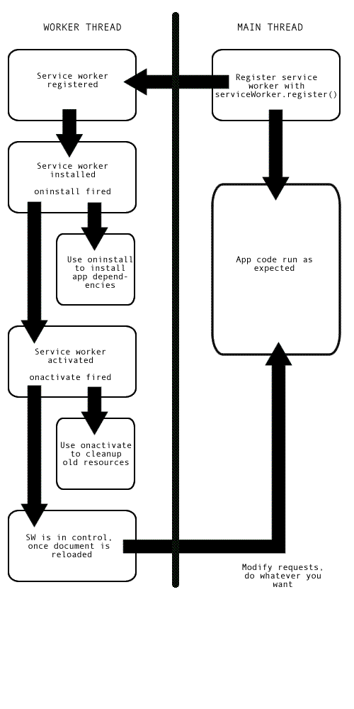

This is an experimental technology
Because this technology's specification has not stabilized, check the compatibility table for the proper prefixes to use in various browsers. Also note that the syntax and behavior of an experimental technology is subject to change in future versions of browsers as the spec changes.
This article provides information on getting started with service workers, including basic architecture, registering a service worker, the install and activation process for a new service worker, updating your service worker, cache control and custom responses, all in the context of a simple app with offline functionality.
The premise of Service Workers
The one overriding problem that web users have suffered with for years is loss of connectivity. The best web app in the world will provide a terrible user experience if you can’t download it. There have been various attempts to create technologies to solve this problem, as our Offline page shows, and some of the issues have been solved. But the overriding problem is that there still isn’t a good overall control mechanism for asset caching and custom network requests.
The previous attempt — AppCache — seemed to be a good idea because it allowed you to specify assets to cache really easily. However, it made many assumptions about what you were trying to do and then broke horribly when your app didn’t follow those assumptions exactly. Read Jake Archibald's Application Cache is a Douchebag for more details.
Service workers should finally fix these issues. Service Worker syntax is more complex than that of AppCache, but the trade off is that you can use JavaScript to control your AppCache-implied behaviours with a fine degree of granularity, allowing you to handle this problem and many more. Using a Service Worker you can easily set an app up to use cached assets first, thus providing a default experience even when offline, before then getting more data from the network (commonly known as Offline First). This is already available with native apps, which is one of the main reasons native apps are often chosen over web apps.
Setting up to play with Service Workers
Many service workers features are now enabled by default in newer versions of supporting browsers. If however you find that demo code is not working in your installed versions, you might need to enable a pref:
- Firefox Nightly: Go to
about:configand setdom.serviceWorkers.enabledto true; restart browser. - Chrome Canary: Go to
chrome://flagsand turn onexperimental-web-platform-features; restart browser (note that some features are now enabled by default in Chrome.) - Opera: Go to
opera://flagsand enableSupport for ServiceWorker; restart browser.
You’ll also need to serve your code via HTTPS — Service Workers are restricted to running across HTTPS for security reasons. GitHub is therefore a good place to host experiments, as it supports HTTPS.
Note: You can find special service worker builds of Firefox with nascent features available that aren't yet available in Nightly.
Basic architecture

With service workers, the following steps are generally observed for basic set up:
- The service worker URL is fetched and registered via
serviceWorker.register(). - If successful, the service worker is executed in a
ServiceWorkerGlobalScope; this is basically a special kind of worker context, running off the main script execution thread, with no DOM access. - The service worker is now ready to process events.
- Installation of the worker is attempted when service worker-controlled pages are accessed subsequently. An Install event is always the first one sent to a service worker (this can be used to start the process of populating an IndexedDB, and caching site assets say). This is really the same kind of procedure as installing a native or Firefox OS app — making everything available for use offline.
- When the
oninstallhandler completes, the service worker is considered installed. - Next is activation. When the service worker is installed, it then receives an activate event. The primary use of
onactivateis for cleanup of resources used in previous versions of a Service Worker script. - The Service Worker will now control pages, but only those opened after the
register()is successful. i.e. a document starts life with or without a Service Worker and maintains that for its lifetime. So documents will have to be reloaded to actually be controlled.
Promises
Promises are a great mechanism for running async operations, with success dependant on one another. This is central to the way service workers work.
Promises can do a great many things, but for now, all you need to know is that if something returns a promise, you can attach .then() to the end and include callbacks inside it for success, failure, etc., or you can insert .catch() on the end if you want to include a failure callback.
Let’s compare a traditional synchronous callback structure to its asynchronous promise equivalent.
sync
try {
var value = myFunction();
console.log(value);
} catch(err) {
console.log(err);
}
async
myFunction().then(function(value) {
console.log(value);
}).catch(function(err) {
console.log(err);
});
In the first example, we have to wait for myFunction() to run and return value before any more of the code can execute. In the second example, myFunction() returns a promise for value, then the rest of the code can carry on running. When the promise resolves, the code inside then will be run, asynchronously.
Now for a real example — what if we wanted to load images dynamically, but we wanted to make sure the images were loaded before we tried to display it? This is a standard thing to want to do, but it can be a bit of a pain. We can use .onload to only display the image after it’s loaded, but what about events that start happening before we start listening to them? We could try to work around this using .complete, but it’s still not foolproof, and what about multiple images? And, ummm, it’s still synchronous, so blocks the main thread.
Instead, we could build our own promise to handle this kind of case. (See our Promises test example for the source code, or look at it running live.)
function imgLoad(url) {
return new Promise(function(resolve, reject) {
var request = new XMLHttpRequest();
request.open('GET', url);
request.responseType = 'blob';
request.onload = function() {
if (request.status == 200) {
resolve(request.response);
} else {
reject(Error('Image didn\'t load successfully; error code:' + request.statusText));
}
};
request.onerror = function() {
reject(Error('There was a network error.'));
};
request.send();
});
};
We return a new promise using the Promise() constructor, which takes as an argument a callback function with resolve and reject parameters. Somewhere in the function, we need to define what happens for the promise to resolve successfully or be rejected — in this case return a 200 OK status or not — and then call resolve on success, or reject on failure. The rest of the contents of this function is fairly standard XHR stuff, so we won’t worry about that for now.
When we come to call the imgLoad() function, we call it with the url to the image we want to load, as we might expect, but the rest of the code is a little different:
var body = document.querySelector('body');
var myImage = new Image();
imgLoad('myLittleVader.jpg').then(function(response) {
var imageURL = window.URL.createObjectURL(response);
myImage.src = imageURL;
body.appendChild(myImage);
}, function(Error) {
console.log(Error);
});
On to the end of the function call, we chain the promise then() method, which contains two functions — the first one is executed when the promise successfully resolves, and the second is called when the promise is rejected. In the resolved case, we display the image inside myImage and append it to the body (it’s argument is the request.response contained inside the promise’s resolve method); in the rejected case we return an error to the console.
This all happens asynchronously.
Note: You can also chain promise calls together, for example:
myPromise().then(success, failure).then(success).catch(failure);
Note: You can find a lot more out about promises by reading Jake Archibald’s excellent JavaScript Promises: there and back again.
Service workers demo
To demonstrate just the very basics of registering and installing a service worker, we have created a simple demo called sw-test, which is a simple Star wars Lego image gallery. It uses a promise-powered function to read image data from a JSON object and load the images using Ajax, before displaying the images in a line down the page. We’ve kept things static and simple for now. It also registers, installs, and activates a service worker, and when more of the spec is supported by browsers it will cache all the files required so it will work offline!

You can see the source code on GitHub, and view the example live. The one bit we’ll call out here is the promise (see app.js lines 17-42), which is a modified version of what you read about above, in the Promises test demo. It is different in the following ways:
- In the original, we only passed in a URL to an image we wanted to load. In this version, we pass in a JSON fragment containing all the data for a single image (see what they look like in image-list.js). This is because all the data for each promise resolve has to be passed in with the promise, as it is asynchronous. If you just passed in the url, and then tried to access the other items in the JSON separately when the
for()loop is being iterated through later on, it wouldn’t work, as the promise wouldn’t resolve at the same time as the iterations are being done (that is a synchronous process.) - We actually resolve the promise with an array, as we want to make the loaded image blob available to the resolving function later on in the code, but also the image name, credits and alt text (see app.js lines 26-29). Promises will only resolve with a single argument, so if you want to resolve with multiple values, you need to use an array/object.
- To access the resolved promise values, we then access this function as you’d then expect (see app.js lines 55-59.) This may seem a bit odd at first, but this is the way promises work.
Enter Service workers
Now let’s get on to service workers!
Registering your worker
The first block of code in our app’s JavaScript file — app.js — is as follows. This is our entry point into using service workers.
if ('serviceWorker' in navigator) {
navigator.serviceWorker.register('/sw-test/sw.js', { scope: '/sw-test/' }).then(function(reg) {
// registration worked
console.log('Registration succeeded. Scope is ' + reg.scope);
}).catch(function(error) {
// registration failed
console.log('Registration failed with ' + error);
});
};
- The outer block performs a feature detection test to make sure service workers are supported before trying to register one.
- Next, we use the
ServiceWorkerContainer.register()function to register the service worker for this site, which is just a JavaScript file residing inside our app (note this is the file's URL relative to the origin, not the JS file that references it.) - The
scopeparameter is optional, and can be used to specify the subset of your content that you want the service worker to control. In this case, we have specified '/swtest/', which means all content under the app's origin. If you leave it out, it will default to this value anyway, but we specified it here for illustration purposes. - The
.then()promise function is used to chain a success case onto our promise structure. When the promise resolves successfully, the code inside it executes. - Finally, we chain a
.catch()function onto the end that will run if the promise is rejected.
This registers a service worker, which runs in a worker context, and therefore has no DOM access. You then run code in the service worker outside of your normal pages to control their loading.
A single service worker can control many pages. Each time a page within your scope is loaded, the service worker is installed against that page and operates on it. Bear in mind therefore that you need to be careful with global variables in the service worker script: each page doesn’t get its own unique worker.
Note: Your service worker functions like a proxy server, allowing you to modify requests and responses, replace them with items from its own cache, and more.
Note: One great thing about service workers is that if you use feature detection like we’ve shown above, browsers that don’t support service workers can just use your app online in the normal expected fashion. Furthermore, if you use AppCache and SW on a page, browsers that don’t support SW but do support AppCache will use that, and browsers that support both will ignore the AppCache and let SW take over.
Why is my service worker failing to register?
This could be for the following reasons:
- You are not running your application through HTTPS
- The path to your service worker file is not written correctly — it needs to be written relative to the origin, not your app’s root directory. In our example, the worker is at
https://mdn.github.io/sw-test/sw.js, and the app’s root ishttps://mdn.github.io/sw-test/. But the path needs to be written as/sw-test/sw.js, not/sw.js. - The service worker being pointed to is on a different origin to that of your app. This is also not allowed.
Install and activate: populating your cache
After your service worker is registered, the browser will attempt to install then activate the service worker for your page/site.
The install event is fired when an install is successfully completed. The install event is generally used to populate your browser’s offline caching capabilities with the assets you need to run your app offline. To do this, we use Service Worker’s brand new storage API — cache — a global on the service worker that allows us to store assets delivered by responses, and keyed by their requests. This API works in a similar way to the browser’s standard cache, but it is specific to your domain. It persists until you tell it not to — again, you have full control.
Note: The Cache API is not supported in every browser. (See the Browser support section for more information.) If you want to use this now, you could consider using a polyfill like the one available in Google's Topeka demo, or perhaps store your assets in IndexedDB.
Let’s start this section by looking at a code sample — this is the first block you’ll find in our service worker:
this.addEventListener('install', function(event) {
event.waitUntil(
caches.open('v1').then(function(cache) {
return cache.addAll([
'/sw-test/',
'/sw-test/index.html',
'/sw-test/style.css',
'/sw-test/app.js',
'/sw-test/image-list.js',
'/sw-test/star-wars-logo.jpg',
'/sw-test/gallery/',
'/sw-test/gallery/bountyHunters.jpg',
'/sw-test/gallery/myLittleVader.jpg',
'/sw-test/gallery/snowTroopers.jpg'
]);
})
);
});
- Here we add an
installevent listener to the service worker (hencethis), and then chain aExtendableEvent.waitUntil()method onto the event — this ensures that the Service Worker will not install until the code insidewaitUntil()has successfully occurred. - Inside
waitUntil()we use theCaches.open()method to create a new cache calledv1, which will be version 1 of our site resources cache. This returns a promise for a created cache; once resolved, we then call a function that callsaddAll()on the created cache, which for its parameter takes an array of origin-relative URLs to all the resources you want to cache. - If the promise is rejected, the install fails, and the worker won’t do anything. This is ok, as you can fix your code and then try again the next time registration occurs.
- After a successful installation, the service worker activates. This doesn’t have much of a distinct use the first time your service worker is installed/activated, but it means more when the service worker is updated (see the Updating your service worker section later on.)
Note: localStorage works in a similar way to service worker cache, but it is synchronous, so not allowed in service workers.
Note: IndexedDB can be used inside a service worker for data storage if you require it.
Custom responses to requests
Now you’ve got your site assets cached, you need to tell service workers to do something with the cached content. This is easily done with the fetch event.
A fetch event fires every time any resource controlled by a service worker is fetched, which includes the documents inside the specified scope, and any resources referenced in those documents (for example if index.html makes a cross origin request to embed an image, that still goes through its service worker.)
You can attach a fetch event listener to the service worker, then call the respondWith() method on the event to to hijack our HTTP responses and update them with your own magic.
this.addEventListener('fetch', function(event) {
event.respondWith(
// magic goes here
);
});
We could start by simply responding with the resource whose url matches that of the network request, in each case:
this.addEventListener('fetch', function(event) {
event.respondWith(
caches.match(event.request);
);
});
caches.match(event.request) allows us to match each resource requested from the network with the equivalent resource available in the cache, if there is a matching one available. The matching is done via url and vary headers, just like with normal HTTP requests.
Let’s look at a few other options we have when defining our magic (see our Fetch API documentation for more information about Request and Response objects.)
| Code | Explanation |
|---|---|
new Response('Hello from your friendly neighbourhood service worker!');
|
The |
new Response('<p>Hello from your friendly neighbourhood service worker!</p>', {
headers: { 'Content-Type': 'text/html' }
})
|
This more complex Response shows that you can optionally pass a set of headers in with your response, emulating standard HTTP response headers. Here we are just telling the browser what the content type of our synthetic response is. |
fetch(event.request) |
If a match wasn’t found in the cache, you could tell the browser to simply fetch the default network request for that resource, to get the new resource from the network if it is available. |
caches.match('/fallback.html');
|
If a match wasn’t found in the cache, and the network isn’t available, you could just match the request with some kind of default fallback page as a response using match(), like this. |
event.request.url event.request.method event.request.headers event.request.body |
You can retrieve a lot of information about each request by calling parameters of the Request object returned by the FetchEvent. |
Recovering failed requests
So caches.match(event.request) is great when there is a match in the service worker cache, but what about cases when there isn’t a match? If we didn’t provide any kind of failure handling, our promise would reject and we would just come up against a network error when a match isn’t found.
Fortunately service workers’ promise-based structure makes it trivial to provide further options towards success. We could do this:
this.addEventListener('fetch', function(event) {
event.respondWith(
caches.match(event.request).catch(function() {
return fetch(event.request);
})
);
});
If the promise rejects, the catch() function returns the default network request for the resource instead, meaning that those who have network available can just load the resource from the server.
If we were being really clever, we would not only request the resource from the network; we would also save it into the cache so that later requests for that resource could be retrieved offline too! This would mean that if extra images were added to the Star Wars gallery, our app could automatically grab them and cache them. The following would do the trick:
this.addEventListener('fetch', function(event) {
event.respondWith(
caches.match(event.request).catch(function() {
return fetch(event.request).then(function(response) {
return caches.open('v1').then(function(cache) {
cache.put(event.request, response.clone());
return response;
});
});
})
);
});
Here we return the default network request with return fetch(event.request), which returns a promise. When this promise is resolved, we respond by running a function that grabs our cache using caches.open('v1'); this also returns a promise. When that promise resolves, cache.put() is used to add the resource to the cache. The resource is grabbed from event.request, and the response is then cloned with response.clone() and added to the cache. The clone is put in the cache, and the original response is returned to the browser to be given to the page that called it.
Why? This is because request and response streams can only be read once. In order to return the response to the browser and put it in the cache we have to clone it. So the original gets returned to the browser and the clone gets sent to the cache. They are each read once.
The only trouble we have now is that if the request doesn’t match anything in the cache, and the network is not available, our request will still fail. Let’s provide a default fallback so that whatever happens, the user will at least get something:
this.addEventListener('fetch', function(event) {
event.respondWith(
caches.match(event.request).catch(function() {
return fetch(event.request).then(function(response) {
return caches.open('v1').then(function(cache) {
cache.put(event.request, response.clone());
return response;
});
});
}).catch(function() {
return caches.match('/sw-test/gallery/myLittleVader.jpg');
})
);
});
We have opted for this fallback image because the only updates that are likely to fail are new images, as everything else is depended on for installation in the install event listener we saw earlier.
Updated code pattern suggestion
This uses more standard promise chaining and returns the response to the document without having to wait for caches.open() to resolve:
this.addEventListener('fetch', function(event) {
var response;
event.respondWith(caches.match(event.request).catch(function() {
return fetch(event.request);
}).then(function(r) {
response = r;
caches.open('v1').then(function(cache) {
cache.put(event.request, response);
});
return response.clone();
}).catch(function() {
return caches.match('/sw-test/gallery/myLittleVader.jpg');
}));
});
Updating your service worker
If your service worker has previously been installed, but then a new version of the worker is available on refresh or page load, the new version is installed in the background, but not yet activated. It is only activated when there are no longer any pages loaded that are still using the old service worker. As soon as there are no more such pages still loaded, the new service worker activates.
You’ll want to update your install event listener in the new service worker to something like this (notice the new version number):
this.addEventListener('install', function(event) {
event.waitUntil(
caches.open('v2').then(function(cache) {
return cache.addAll([
'/sw-test/',
'/sw-test/index.html',
'/sw-test/style.css',
'/sw-test/app.js',
'/sw-test/image-list.js',
…
// include other new resources for the new version...
]);
});
);
});
While this happens, the previous version is still responsible for fetches. The new version is installing in the background. We are calling the new cache v2, so the previous v1 cache isn't disturbed.
When no pages are using the current version, the new worker activates and becomes responsible for fetches.
Deleting old caches
You also get an activate event. This is a generally used to do stuff that would have broken the previous version while it was still running, for example getting rid of old caches. This is also useful for removing data that is no longer needed to avoid filling up too much disk space — each browser has a hard limit on the amount of cache storage that a given service worker can use. The browser does its best to manage disk space, but it may delete the Cache storage for an origin. The browser will generally delete all of the data for an origin or none of the data for an origin.
Promises passed into waitUntil() will block other events until completion, so you can rest assured that your clean-up operation will have completed by the time you get your first fetch event on the new cache.
this.addEventListener('activate', function(event) {
var cacheWhitelist = ['v2'];
event.waitUntil(
caches.keys().then(function(keyList) {
return Promise.all(keyList.map(function(key) {
if (cacheWhitelist.indexOf(key) === -1) {
return caches.delete(keyList[i]);
}
});
})
);
});
Dev tools
Chrome has chrome://inspect/#service-workers, which shows current service worker activity and storage on a device, and chrome://serviceworker-internals, which shows more detail and allows you to start/stop/debug the worker process. In the future they will have throttling/offline modes to simulate bad or non-existent connections, which will be a really good thing.
Firefox has also started to implement some useful tools related to service workers:
- You can navigate to about:serviceworkers to see what SWs are registered and update/remove them.
- When testing you can get around the HTTPS restriction by checking the "Enable Service Workers over HTTP (when toolbox is open)" option in the Firefox Devtools options (gear menu.)
Specifications
| Specification | Status | Comment |
|---|---|---|
| Service Workers | Working Draft | Initial definition. |
Browser compatibility
| Feature | Chrome | Firefox (Gecko) | Internet Explorer | Opera | Safari (WebKit) |
|---|---|---|---|---|---|
navigator.serviceWorker/serviceWorker.register |
40.0 |
33.0 (33.0) | Not supported | 24 | Not supported |
| install/activate events | 40.0 | 33.0 (33.0) | Not supported | (Yes) | Not supported |
fetch event/request/respondWith() |
40.0 | 33.0 (33.0) | Not supported | Not supported | Not supported |
| caches/cache |
42.0 |
41.0 (41.0) | Not supported | Not supported | Not supported |
| Feature | Android | Chrome for Android | Firefox Mobile (Gecko) | Firefox OS | IE Phone | Opera Mobile | Safari Mobile |
|---|---|---|---|---|---|---|---|
navigator.serviceWorker/serviceWorker.register |
Not supported | 40.0 | (Yes) | (Yes) | Not supported | (Yes) | Not supported |
| install/activate events | Not supported | 40.0 | (Yes) | (Yes) | Not supported | (Yes) | Not supported |
fetch event/request/respondWith() |
Not supported | 40.0 | (Yes) | (Yes) | Not supported | Not supported | Not supported |
| caches/cache | Not supported | 40.0 | (Yes) | (Yes) | Not supported | Not supported | Not supported |
Service Workers features are currently hidden behind a pref in many cases (Chrome now enables some of it by default.) To enable them:
- Firefox Nightly/Firefox OS: Go to
about:configand setdom.serviceWorkers.enabledtotrue; restart browser. In Firefox you can also disable https-only checks by settingdom.serviceWorkers.testing.enabledtotrue. In Firefox OS you can enable the prefs using the WebIDE tool by going to Other > Device Preferences; bear in mind that you also need to disable devtools restricted privileges. - Chrome Canary: Go to
chrome://flagsand turn onexperimental-web-platform-features; restart browser.enable-service-worker-syncis also available in Chrome if you want to play with background sync for service workers. - Opera: Go to
opera://flagsand enableSupport for ServiceWorker; restart browser.
Note: You can find special service worker builds of Firefox with service workers enabled by default, and nascent features available that aren't yet available in Nightly.
Note: For backwards compatibility, you could choose to use service workers and AppCache on the same web app to do equivalent things (if the AppCache will support doing those things, of course.) What happens in such a case is that browsers that don’t support Service Workers will use AppCache, and those that do will ignore the AppCache and let the service worker take over.